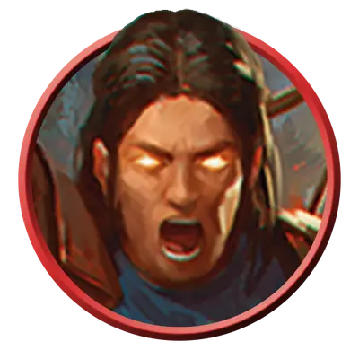

Командир воителей
Warrior Commander
Средний или Маленький Гуманоид, Нейтральный

Класс Защиты 18 Инициатива +9 (19)
Хиты 161 (19к8 + 76)
Скорость 30 футов
| мод | спас | ||
|---|---|---|---|
| СИЛ | 21 | +5 | +9 |
| ЛОВ | 20 | +5 | +9 |
| ТЕЛ | 18 | +4 | +8 |
| мод | спас | ||
|---|---|---|---|
| ИНТ | 14 | +2 | +2 |
| МДР | 16 | +3 | +7 |
| ХАР | 14 | +2 | +2 |
Чувства пассивное Восприятие 17
Языки Общий
Опасность 10 (5 900 опыта; БВ +4)
Действия
Мультиатака. Командир совершает три атаки Двуручным мечом или Длинным луком в любой комбинации.
Двуручный меч. Бросок рукопашной атаки: +9, досягаемость 5 фт. Попадание: 19 (4к6 + 5) Рубящего урона, и командир создаёт один из следующих эффектов:
Ослабление. Цель получает Помеху на следующий бросок атаки до начала следующего хода командира.
Манёвр. Один союзник, видящий и слышащий командира, Реакцией перемещается на расстояние вплоть до половины своей Скорости, не Провоцируя атак.
Длинный лук. Бросок дальнобойной атаки: +9, дистанция 150/600 фт. Попадание: 18 (3к8 + 5) Колющего урона, и Скорость цели снижается на 10 футов до конца её следующего хода.
Бонусные действия
Тактический рывок. Командир перемещается на расстояние вплоть до половины своей Скорости по прямой к видимому им врагу, не Провоцируя атак.
Реакции
Контратака. Условие: По командиру попадают броском атаки. Эффект: Командир добавляет бонус +4 к КЗ против этой атаки, что может привести к её промаху. Если эта атака промахивается, командир может совершить по атакующему одну атаку Двуручным мечом или Длинным луком.
Бонус мастерства +4
Среда обитания Любая
Сокровища Оружейные
Воители
Солдаты и мародёры
Воители — это профессионалы, которые зарабатывают на жизнь своим навыками в боях. Они владеют разными тактиками и умеют использовать преимущества необычных полей битв. Как правило, воители действуют сообща в составе армии или отряда с чётко заданными целями.
Совершите бросок по таблице «Роль воителя» для вдохновения или выберите сами уникальную роль воителя.
Роль воителя
| 1к10 | Воитель — это… |
| 1 | Телохранитель, охраняющий дворянина. |
| 2 | Кавалерист на необычном скакуне. |
| 3 | Храмовник, сражающийся за богоугодное дело. |
| 4 | Дуэлянт, уверенный в своей неуязвимости. |
| 5 | Привратник, задающий бессмысленные вопросы. |
| 6 | Закалённый ветеран, обучающий новобранцев. |
| 7 | Охотник, искусный в истреблении определённых чудовищ. |
| 8 | Отставной генерал, уставший от войны. |
| 9 | Ополченец с самодельным оружием. |
| 10 | Молодой наёмник, стремящийся доказать своё мастерство. |
Обладая талантами как бойцов, так и полководцев, командиры воителей побеждают с помощью сочетания воинского мастерства и продуманной тактики.